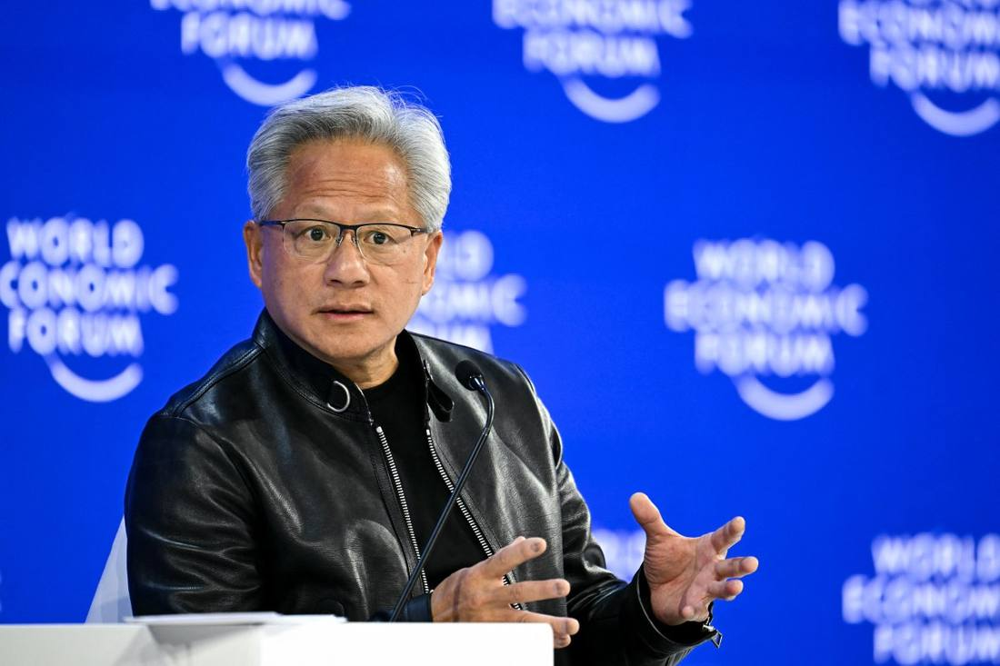

Jensen Huang Breaks His Silence: 'Honored' to Return as Nvidia CEO if the Board Asks
Jensen Huang said on November 17, 2026 that he would be honored to return as Nvidia CEO if the board decides his return is in the best interest of shareholders, employees, the company and America, in his first public statement since resigning on November 12. He owned his mistakes and pledged cooperation with the board's independent investigation. The board told the Washington Post on Monday it has no plans to reinstate him. Nvidia reports third-quarter earnings after the close on Tuesday, its first under interim CEO Colette Kress.

- 01THE STATEMENT — Jensen Huang posted his first public statement since resigning on November 12, saying he would be honored to return as Nvidia CEO if the board decides his return is in the best interest of shareholders, employees, the company and America.
- 02THE CONTEXT — Huang resigned four days after the board opened an investigation on November 8 into an affair he admitted to, amid reports of multiple affairs including one with Alice Huang, a former Megaspeed executive US officials suspect of being a Chinese intelligence asset.
- 03THE BOARD'S POSITION — The board told the Washington Post on Monday it has no plans to reinstate Huang, and a CNN source says the board is still not considering it, despite an open letter from more than 10,000 current and former employees and President Trump's remark that he would not mind a return.
WHAT HAPPENEDWhat Happened
Jensen Huang broke his silence on November 17, 2026, with his first public statement since resigning as Nvidia chief executive on November 12. In a statement posted on X, Huang said he would be honored to return as CEO if the board decides his return is in the best interest of shareholders, employees, the company and America. He also owned the conduct that ended his tenure, writing that he did not live up to the standards expected of everyone at Nvidia, that he made serious mistakes in his personal life, that he created problems for the board which he deeply regrets, and that he is committed to cooperating with the board's independent investigation.
The statement answers a question that has dominated Nvidia for five days. Huang resigned on November 12, four days after the board said on November 8 that it had opened an investigation into an affair he admitted to. Reports since have described multiple affairs, including one with a direct report and one with Alice Huang, a former Megaspeed executive US officials suspect of being a Chinese intelligence asset. Nvidia's chip exports have faced intense scrutiny since the revelations, and Huang is scheduled to testify before Congress on December 1, before the House Foreign Affairs Committee, the Select Committee on the Chinese Communist Party and the House Intelligence Committee. Nvidia general counsel Tim Teter testifies the following day.
The calls for Huang's return have been loud and organized. An open letter circulated earlier in the week attracted signatures from more than 10,000 current and former Nvidia employees, as well as prominent tech figures including Elon Musk, Amjad Masad and Travis Kalanick, asking the board to provide a specific, evidence-based explanation if it believes his continued absence serves Nvidia's best interests. President Donald Trump said on Monday he would not mind if Huang returned. But the board has not moved: an unnamed board source told the Washington Post on Monday there were no plans to reinstate Huang, CNBC reported the same day the board was not considering a return, and a source familiar with the situation told CNN the board is still not considering reinstating him. One senator, reached by Politico, called reinstatement one of the worst ideas heard that day.
The statement lands hours before Nvidia reports third-quarter results after the close on Tuesday, its first earnings under interim chief executive Colette Kress, the chief financial officer. The company is expected to report revenue of about $109 billion and earnings per share of $2.47. Nvidia shares have fallen about 24 percent this month and have lost about $410 billion in market value since Huang's resignation. Earlier on Tuesday, the board created a National Security and Export Control Oversight Committee, chaired by director Suzanne Nora Johnson, to oversee national security and global trade compliance, its first major governance move since Huang left.
WHY IT MATTERSThe founder just made the board's decision a public one
Huang's statement changes the politics of his return without changing the process. Until Tuesday, the return question was carried by other people: an open letter, a petition, investors, and a president. Now the founder himself has said, on the record, that he wants the job back if the board will have him, and he has framed the choice in terms of shareholders, employees, the company and America. That framing puts the board in a harder position. It can still say no, as its sources have said it will, but it now has to say no to the founder's own public offer, days before he testifies to Congress about the company's China business.
The apology matters as much as the offer. Huang owned the mistakes completely and pledged cooperation with the independent investigation, which is the language of someone asking to be judged on what happens next rather than on what already happened. Whether that is enough depends on what the investigation finds and on Congress, where resistance to reinstatement is explicit. The board's new export-control oversight committee, announced the same day, reads as the other half of the response: governance tightening while the leadership question stays open.
WHAT TO WATCHTonight's earnings call is the next test
Watch the earnings call first. Kress presents Nvidia's first results without Huang tonight, with consensus at about $109 billion in revenue and $2.47 per share, and the call will be read for any signal on the leadership search, on margins, and on how the company answers the export-control questions that now sit with a new board committee. A steady print does not settle the CEO question, but a weak one makes the calls for Huang louder.
Then watch the board. Huang's statement invites a response, and silence now reads as an answer of its own. The search continues in parallel, and the December 1 testimony is the next fixed date: Huang appears before three House committees, and whatever he says about chip exports to China-linked firms will shape whether his return stays a live question or becomes a closed one.
SIGNAL JUDGMENT — ANALYSISThe founder wants the job back. The board still says no.
Tokenta Signal's judgment: Huang's statement is the most consequential development in the Nvidia saga since the resignation itself, and it changes nothing about the outcome yet. A founder saying he would be honored to return, hours before earnings, turns a boardroom question into a public one, and the board now has to refuse the founder himself rather than a petition. But the refusal is already on the record from three directions, the board, Congress and the investigation still to come, and the statement offers no new fact that answers any of them. The honest read is that Huang has put his case to the public while the decision stays with the board, and tonight's earnings call, not this statement, is where the company has to show it can run without him. If Kress delivers a steady quarter, the board can keep saying no. If the numbers wobble, the honored offer becomes the story of the week.
WHAT REMAINS UNCERTAINWhat Remains Uncertain
EVIDENCEEvidence
Former Nvidia chief executive Jensen Huang said on November 17, 2026 that he would be honored to return as CEO if the board decides his return is in the best interest of shareholders, employees, the company and America, in his first public statement since resigning on November 12.
PRIMARY SOURCESPrimary Sources
- TechCrunch: Jensen Huang says he would be 'honored' if allowed to return as Nvidia CEO
https://techcrunch.com/2026/11/17/jensen-huang-says-he-would-be-honored-if-allowed-to-return-as-nvidia-ceo/ - CNN: Jensen Huang says he would be 'honored' to be reinstated as Nvidia CEO in new statement
https://www.cnn.com/2026/11/17/business/jensen-huang-nvidia-ceo-statement?cid=external-feeds_iluminar_meta